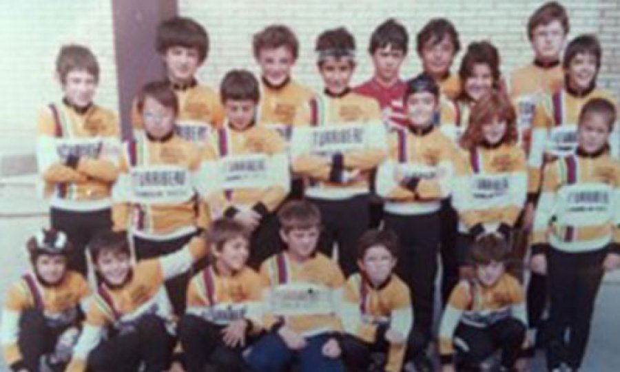
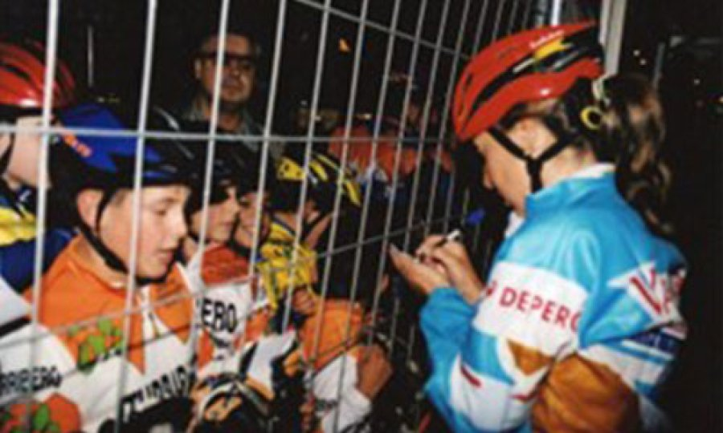

Nuestra Historia
El CDC ITURRIBERO, como Club Deportivo Ciclista sin ánimo de lucro, lleva inscrito en el Registro de Asociaciones del Gobierno Vasco desde 1987, pero realmente, todo empezó mucho antes, allá por el año 1981.
Fue fundado por un grupo de madres y padres adscritos a la Ikastola Ikasbidea de Durana. Con más de 40 años a nuestras espaldas, el Club se ha mantenido vivo con la aportación incansable de esas familias y con la colaboración del AMPA de la Ikastola desde 2011, sumando el apoyo y patrocinio de diferentes empresas y entidades de la zona.
Actualmente, niños y niñas de diferentes centros escolares practican el ciclismo con nosotros, manteniendo intacta la ilusión del primer día. Hoy en día, algunos de aquellos niños que se acercaron al deporte a través del club, son los padres y madres de estas nuevas generaciones.



De la Cantera a la Élite
Son muchos los que se han iniciado bajo nuestra tutela. Antiguos miembros de nuestro Club han hecho del ciclismo su medio de vida, llegando a disputar en la élite del Ciclismo Profesional. Un orgullo que sigue inspirando a nuestra escuela.